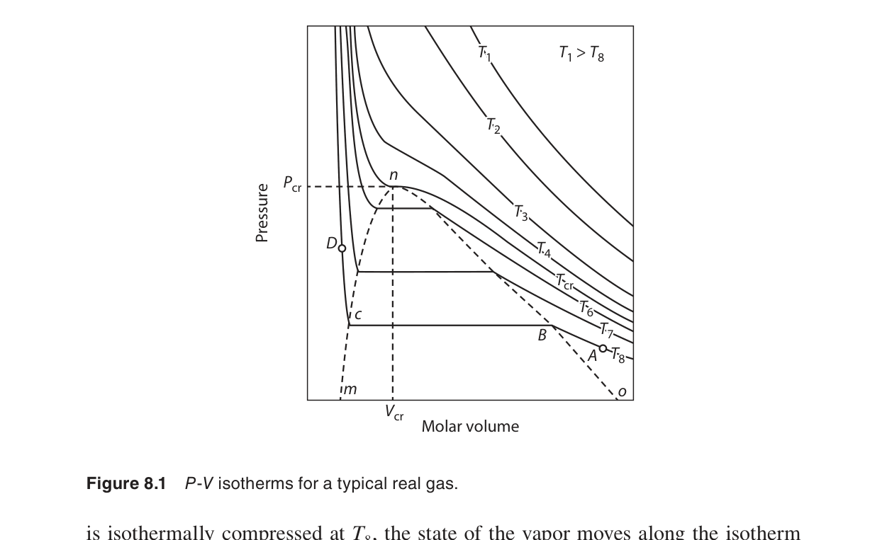
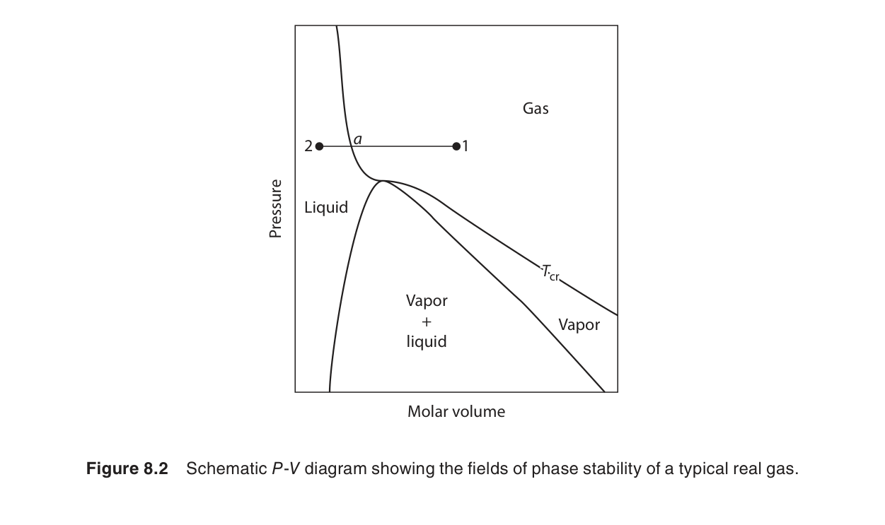
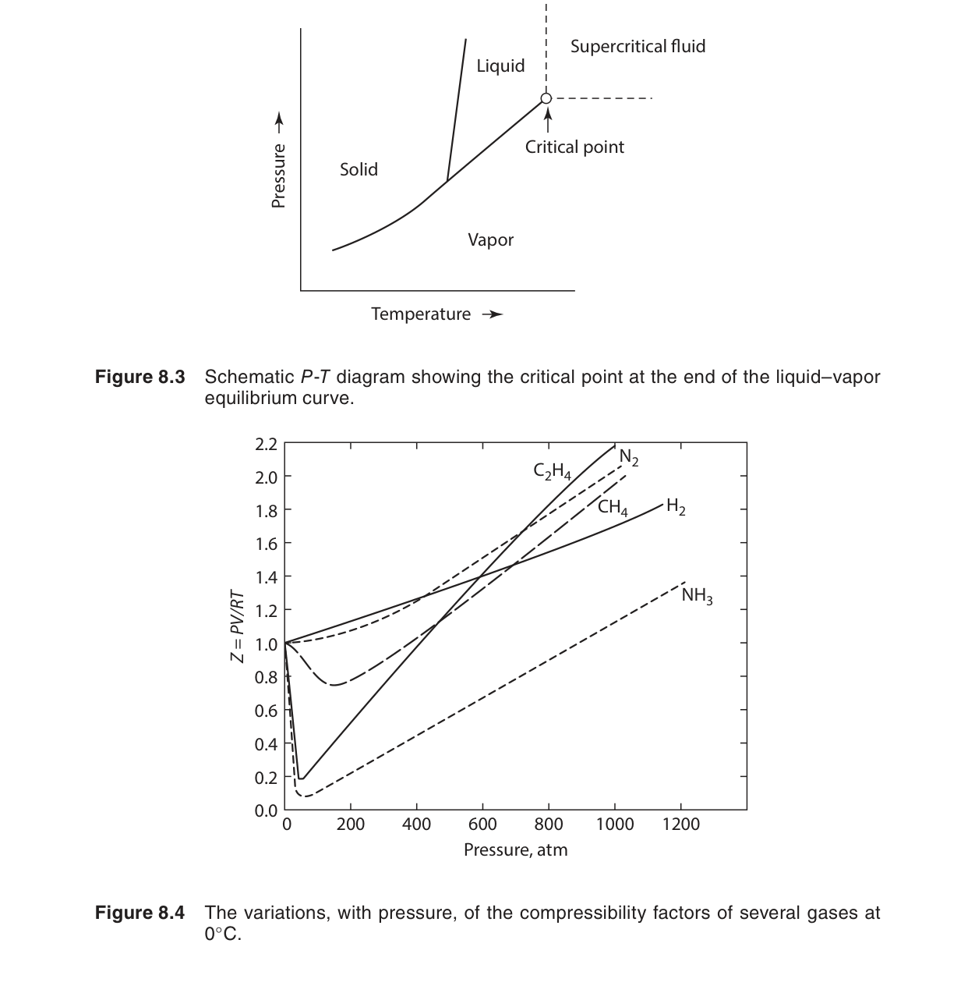
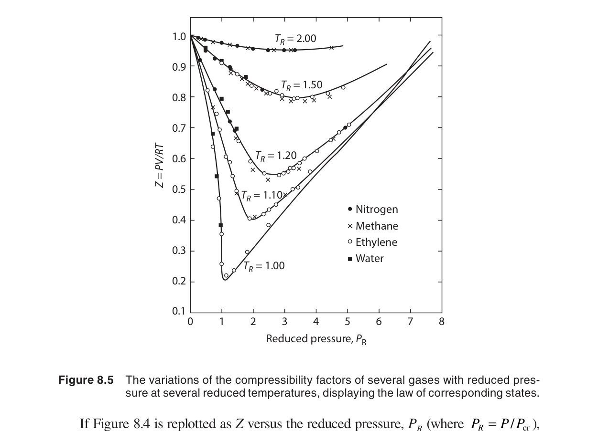
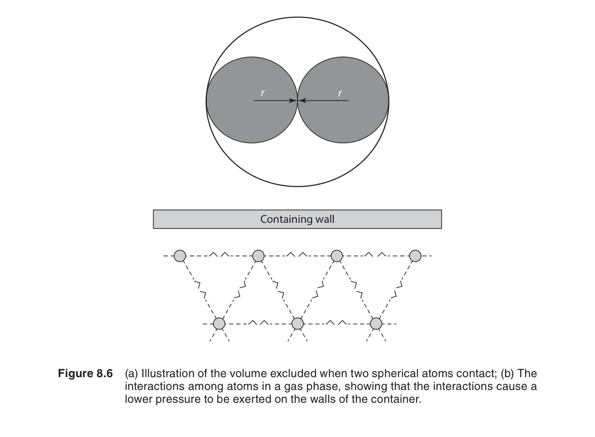
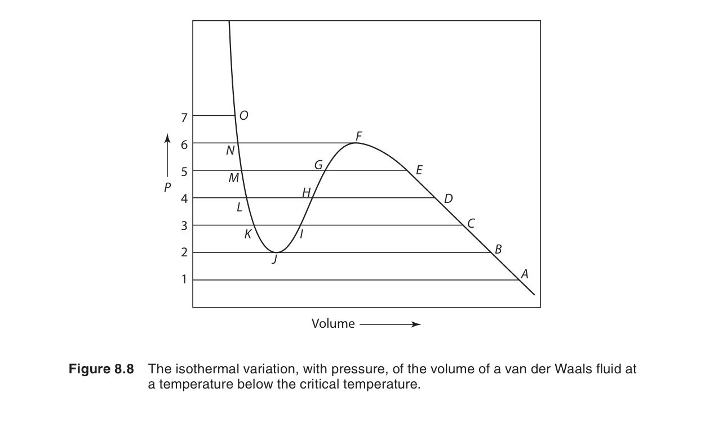
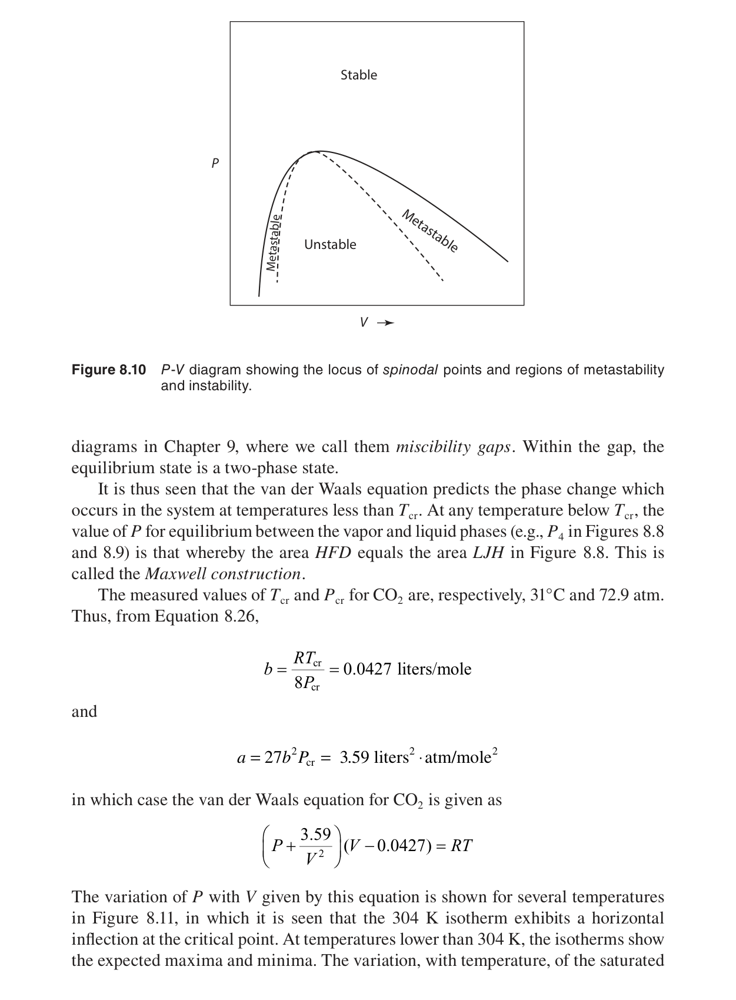
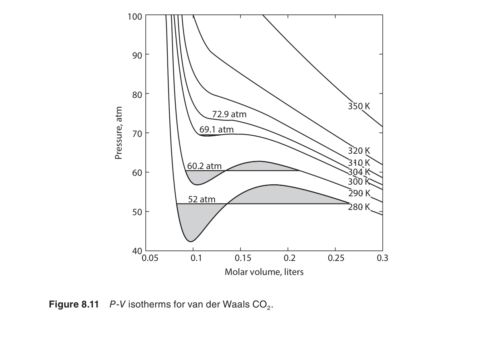
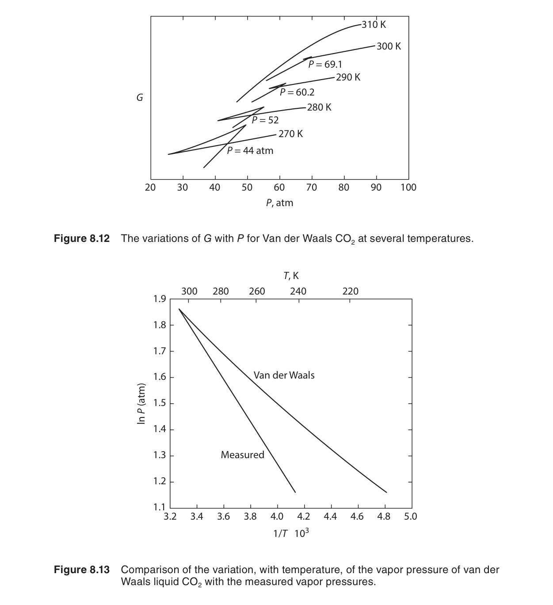

氣體的行為
前七章大量使用「理想氣體」這個方便的近似（$PV = nRT$），但真實氣體在高壓或低溫下會顯著偏離理想行為。本章處理兩個核心問題：如何描述真實氣體的 $P$–$V$–$T$ 行為（van der Waals 等狀態方程式），以及如何修正熱力學關係以處理非理想氣體（引入逸壓 fugacity 來取代壓力）。這些修正對第十一章的高壓氣相反應平衡計算至關重要。
在本章中，我們將學習：
- 壓縮因子 $Z = PV/RT$——量化偏離理想氣體的程度
- 理想氣體混合物的熱力學：混合自由能與熵、Dalton 分壓定律
- van der Waals 方程式：$(P + a/V^2)(V-b) = RT$ 及其預測的臨界行為和氣–液相變
- 對應態原理（principle of corresponding states）
- 逸壓 $f$ 與逸壓係數 $\phi = f/P$ 的定義與計算方法
8.1–8.2 導論與氣體的 $P$–$V$–$T$ 關係
理想氣體定律 $PV = nRT$ 基於兩個假設：氣體分子沒有體積，且分子之間沒有交互作用力。這兩個假設在低壓（分子間距離大）和高溫（動能遠大於位能）下近似成立。但當壓力升高或溫度降低時，分子間力和分子體積不再能被忽略。

壓縮因子（compressibility factor）$Z$ 是量化偏離理想性的標準工具：
$Z = 1$ 表示理想氣體行為。$Z < 1$ 表示氣體比理想情況更容易壓縮——分子間吸引力使氣體「收縮」。$Z > 1$ 表示更難壓縮——分子體積和短程排斥力開始主導。
$Z$ 的微觀詮釋與推導：壓縮因子可以從統計力學的 virial 展開理解。將 $Z$ 表示為體積倒數的級數：
其中第二 virial 係數 $B(T)$ 直接與分子對（pair）的交互作用位能 $\phi(r)$ 有關：
這裡 $N_A$ 是亞佛加厥常數，$k_B$ 是波茲曼常數，$r$ 是分子間距離。若 $\phi(r)$ 為純吸引位能（如 Lennard-Jones 勢能），則 $B(T) < 0$，導致 $Z < 1$；若排斥效應佔優勢，則 $B(T) > 0$，$Z > 1$。這個方程建立了宏觀 $P$–$V$–$T$ 行為與微觀分子間力的直接橋樑。

$Z$–$P$ 圖（在不同溫度下）揭示了豐富的行為：
- 低壓時，所有氣體的 $Z \to 1$（趨近理想行為）
- 中等壓力：低溫時 $Z < 1$（吸引力主導），高溫時 $Z > 1$（排斥力/體積主導）
- Boyle 溫度 $T_B$：在此溫度，$\lim_{P\to 0}(\partial Z/\partial P)_T = 0$——氣體在低壓下的行為正好是理想的。對於 van der Waals 氣體，$T_B = a/(Rb)$。

常見氣體的壓縮因子實例
下表列出若干常見氣體在 $T = 298\;\text{K}$ 下不同壓力時的 $Z$ 值（近似值）：
| 氣體 | 1 atm | 10 atm | 50 atm | 100 atm | 200 atm |
|---|---|---|---|---|---|
| N₂ | 0.9995 | 0.994 | 0.970 | 0.940 | 0.880 |
| O₂ | 0.9993 | 0.992 | 0.963 | 0.926 | 0.865 |
| CO₂ | 0.994 | 0.942 | 0.785 | 0.610 | 0.485 |
| H₂ | 1.000 | 1.008 | 1.042 | 1.086 | 1.175 |
| CH₄ | 0.998 | 0.978 | 0.920 | 0.855 | 0.780 |
注意 CO₂ 在 50 atm 時 $Z$ 已降至 0.785——強吸引力使其極度偏離理想行為。H₂ 則始終 $Z > 1$（即使在高壓下），因為其分子間的排斥力（和分子體積效應）總是主導——這與 H₂ 的低 Boyle 溫度（∼110 K）有關，在 298 K 下已遠高於其 $T_B$。一般來說，$|Z-1| < 0.05$ 時工程上可安全使用理想氣體近似。
8.3 理想氣體混合物的熱力學性質
在處理氣相反應之前（第十一章），我們需要知道氣體混合物的熱力學行為。對於理想氣體混合物，核心結果簡潔而強大：
Dalton 分壓定律
每種氣體的行為如同它單獨佔據整個體積。這是因為理想氣體之間沒有交互作用——每個分子「感覺不到」其他種類分子的存在。
混合熱力學量
這些結果有深刻的物理意義：
- $\Delta G_{\text{mix}} < 0$：混合永遠是自發的（因為 $x_i < 1$，$\ln x_i < 0$）
- $\Delta S_{\text{mix}} > 0$：混合增加無序度。對於等莫耳二元混合物（$x_A = x_B = 0.5$），每莫耳 $\Delta S_{\text{mix}} = R\ln 2 \approx 5.76\ \text{J/mol·K}$
- $\Delta H_{\text{mix}} = 0$：無混合熱——因為分子間沒有交互作用，混合不需要打斷或形成任何「鍵」
數值範例：氮氣與氧氣的混合
考慮將 2 mol N₂ 和 1 mol O₂ 在 $T = 298\;\text{K}$、$P = 1\;\text{atm}$ 下混合：
總莫耳數 $n = 3\;\text{mol}$。莫耳分率 $x_{\text{N}_2} = 2/3$，$x_{\text{O}_2} = 1/3$。
混合焓 $\Delta H_{\text{mix}} = 0$（理想氣體假設下）。注意混合自由能的負值完全來自熵項（$\Delta G_{\text{mix}} = -T\Delta S_{\text{mix}}$），因為 $\Delta H_{\text{mix}} = 0$。
推廣到多成分系統：當混合物包含 $m$ 種氣體且各成分莫耳數相等時，混合熵達到最大值 $\Delta S_{\text{max}} = -nR\sum (1/m)\ln(1/m) = nR\ln m$。例如，三種氣體等莫耳混合時 $\Delta S_{\text{mix}} = nR\ln 3 \approx n \times 9.13\ \text{J/K}$。
混合前後的化學位變化
混合前每種純氣體的化學位為 $\mu_i^* = \mu_i^\circ + RT\ln P$（在總壓 $P$ 下）。混合後，成分 $i$ 的化學位為 $\mu_i = \mu_i^\circ + RT\ln P_i = \mu_i^\circ + RT\ln(x_i P)$。因此混合前後的化學位變化為：
這個負的 $\Delta\mu_i$ 是混合驅動力的微觀來源——每種成分在混合物中的化學位低於其純態，因此混合是自發的。化學位的降低也直接解釋了 $\Delta G_{\text{mix}} = \sum n_i\Delta\mu_i = nRT\sum x_i\ln x_i < 0$。

8.4 偏離理想性與真實氣體的狀態方程式
當 $PV \neq nRT$ 時，我們需要更複雜的狀態方程式。這些方程式通常引入參數來捕捉分子間交互作用的兩個基本面向：吸引力（使氣體更易壓縮）和排斥體積（使氣體更難壓縮）。
van der Waals 方程式（1873）⭐
這是最著名、最具啟發性的真實氣體狀態方程式。Johannes van der Waals 在 1873 年的博士論文中提出，並因此獲得 1910 年諾貝爾物理學獎：
兩個參數的物理意義：
- $a$（吸引力參數）：$a/V^2$ 修正壓力——氣體內部的分子間吸引力減少了撞擊器壁的分子數量和動量，使實際壓力低於理想值。$a$ 越大，分子間吸引力越強。從微觀角度看，$a$ 與分子對位能的體積積分成正比。
- $b$（排斥體積參數）：$V-b$ 修正體積——氣體分子本身佔據空間，實際可用的自由體積小於容器體積。$b$ 大約等於分子本身體積的四倍（由於 excluded volume 效應，兩個分子的質心不能接近到半徑和以內）。
8.5 van der Waals 流體
van der Waals 方程式最深刻的是它預測了臨界點的存在。臨界點是等溫線上 $(\partial P/\partial V)_T = 0$ 和 $(\partial^2 P/\partial V^2)_T = 0$ 同時成立的點——這是迴圈的消失點。
從 van der Waals 方程式推導臨界參數
臨界點滿足等溫線上的拐點條件：
從 van der Waals 方程式 $P = \frac{RT}{V-b} - \frac{a}{V^2}$ 出發，逐次求偏導：
令 $V = V_c$ 代入。由 (8.7b)：$\frac{RT_c}{(V_c-b)^2} = \frac{2a}{V_c^3}$。由 (8.7c)：$\frac{2RT_c}{(V_c-b)^3} = \frac{6a}{V_c^4}$。將兩式相除（第一式除第二式）得：
將 $V_c = 3b$ 代入 (8.7b)：
最後將 $V_c$ 和 $T_c$ 代回 van der Waals 方程式求 $P_c$：
總結臨界參數：
由此可以得到一個非常有趣的關係——臨界壓縮因子：
van der Waals 方程式預測所有氣體的 $Z_c = 0.375$。實際氣體的 $Z_c$ 在 0.25–0.30 範圍內——van der Waals 給出的是近似值，但預測了 $Z_c$ 是普適常數這一重要事實。$Z_c$ 的偏差反映了 van der Waals 方程式在臨界區域的定量局限性，但這不影響它在概念上的巨大價值。

Maxwell 等面積法則與氣–液相變
van der Waals 方程式在 $T < T_c$ 時預測的 $P$–$V$ 等溫線呈現 S 形迴圈（van der Waals loop）。然而實際的等溫線在氣–液共存區是水平的——壓縮氣體時壓力保持不變，直到所有氣體都轉變為液體。James Clerk Maxwell（1875）指出，正確的共存壓力 $P_{\text{sat}}$ 由以下條件決定：
其中 $V_{\text{液}}$ 和 $V_{\text{氣}}$ 是該壓力下水平線與 van der Waals 等溫線的交點體積。此條件等價於 S 形迴圈中高於 $P_{\text{sat}}$ 的部分和低於 $P_{\text{sat}}$ 的部分面積相等——因此稱為等面積法則（equal area rule）。
Maxwell 的熱力學論證：在可逆的氣–液相變中，兩相平衡要求 $\Delta G = 0$。沿等溫路徑 $dG = V\,dP$，因此 $\int_{\text{液}}^{\text{氣}} V\,dP = 0$。通過分部積分 $\int V\,dP = PV - \int P\,dV$，並考慮到積分路徑的起終點壓力相同（均為 $P_{\text{sat}}$），可得 $\int P\,dV = P_{\text{sat}}(V_{\text{氣}} - V_{\text{液}})$，這正是等面積法則的積分形式。
等面積法則揭示了 van der Waals 方程式的一個關鍵不足：S 形迴圈中的 $(\partial P/\partial V)_T > 0$ 區域對應於熱力學不穩定態（壓縮導致壓力下降），實際系統會分離成共存的氣相和液相。van der Waals 方程式雖然能夠定性描述相變，但定量預測需要更精確的模型。

對應態原理（Principle of Corresponding States）
用對比變數（reduced variables）：$T_r = T/T_c$，$P_r = P/P_c$，$V_r = V/V_c$，van der Waals 方程式可以寫成不包含任何物質特定參數的通用形式。代入 $T = T_r T_c$、$P = P_r P_c$、$V = V_r V_c$ 到 van der Waals 方程式：
代入 $P_c = a/(27b^2)$、$V_c = 3b$、$T_c = 8a/(27Rb)$：
化簡後得到通用 van der Waals 方程式：
這個方程式完全不包含 $a$ 和 $b$——也就是說，任何 van der Waals 氣體在相同的對比條件下具有完全相同的 $P$–$V$–$T$ 行為。這就是對應態原理的數學表達。
對應態原理的實用價值巨大：只需知道氣體的 $T_c$ 和 $P_c$（查表可得），就可以用通用壓縮因子圖（$Z$ vs $P_r$ 在不同 $T_r$ 下）估算任何 $T$ 和 $P$ 下的體積。對於工程初步設計，精度通常在 5% 以內。然而，對應態原理只是近似成立——它假設所有氣體具有相同的分子間位能函數形式，這對化學性質相似的氣體（如稀有氣體）效果最好，對極性分子（如水、氨）則有較大偏差。

8.6 其他非理想氣體的狀態方程式
van der Waals 方程式是概念上的里程碑，但定量精度有限。後續發展了許多更精確的方程式：
| 方程式 | 形式 | 特點 |
|---|---|---|
| Redlich–Kwong (1949) | $P = \frac{RT}{V-b} - \frac{a}{T^{1/2}V(V+b)}$ | 改進溫度依賴，預測液相密度更準 |
| Peng–Robinson (1976) | $P = \frac{RT}{V-b} - \frac{a(T)}{V(V+b)+b(V-b)}$ | 石油工業標準——精確預測烴類氣–液平衡 |
| Virial 展開 | $\frac{PV}{RT} = 1 + \frac{B}{V} + \frac{C}{V^2} + \cdots$ | 有堅實的統計力學基礎；$B$（第二 virial 係數）反映分子對交互作用 |
Virial 展開特別值得注意——它不是經驗擬合，而是從統計力學嚴格推導的。第二 virial 係數 $B(T)$ 可以直接從分子間位能函數計算（使用第四章的配分函數方法）。$B < 0$ 對應吸引力主導，$B > 0$ 對應排斥力主導。

Redlich–Kwong 方程式的深入分析
Redlich–Kwong（RK）方程式是 van der Waals 最成功的改良之一：
RK 方程式的參數 $a$ 和 $b$ 亦可從臨界點條件推導：
RK 方程式的臨界壓縮因子 $Z_c = 1/3 \approx 0.333$，比 van der Waals 的 0.375 更接近實際值（0.25–0.30）。Soave（1972）進一步引入了偏心因子 $\omega$ 來改進 RK 的溫度依賴性（稱為 SRK 方程式），使其成為工業模擬軟體（如 Aspen Plus、HYSYS）中廣泛使用的標準狀態方程式之一。
Peng–Robinson 方程式的優勢
Peng–Robinson（PR）方程式在 1976 年被提出，專門針對烴類系統的氣–液平衡計算進行了優化：
其中 $a(T) = 0.45724\frac{R^2 T_c^2}{P_c} \cdot \alpha(T)$，$\alpha(T) = [1 + \kappa(1 - \sqrt{T_r})]^2$，$\kappa = 0.37464 + 1.54226\omega - 0.26992\omega^2$。PR 方程式預測 $Z_c = 0.307$，比 RK 更接近實際值，因此對於高精度相平衡計算尤其適用。


8.7 非理想氣體的進一步熱力學處理——逸壓（Fugacity）
這是本章最重要的概念。對於理想氣體，我們有簡潔的關係 $\mu = \mu^\circ + RT\ln(P/P^\circ)$。對於真實氣體，如果我們直接用壓力代入，化學位的計算就會出錯。Gilbert Lewis（1901）的解決方案極其優雅：
其中 $f$ 是逸壓（fugacity）——「有效壓力」。逸壓的定義確保這個簡單對數形式始終成立。$f$ 不是一個新的物理量——它是壓力經過非理想性修正後的結果。
逸壓定義的嚴格推導
從化學位的微分形式出發：
等溫下 $d\mu = \bar{V}\,dP$。對於理想氣體 $\bar{V} = RT/P$，積分得 $\mu = \mu^\circ + RT\ln(P/P^\circ)$。對於真實氣體，$\bar{V} \neq RT/P$，但我們希望保持化學位的對數形式。為此定義逸壓 $f$ 使得等溫下：
且滿足邊界條件 $\lim_{P\to 0} f/P = 1$（低壓極限下趨於理想行為）。比較 $d\mu = \bar{V}\,dP$ 和 $d\mu = RT\,d\ln f$，得到：
逸壓係數的計算公式
$\phi = 1$ 表示理想行為；$\phi < 1$ 表示吸引力主導（$f < P$——氣體「行為像」壓力低於實際壓力）；$\phi > 1$ 表示排斥力/體積主導。低壓極限下所有氣體趨近理想行為：
從 $P$–$V$–$T$ 數據計算逸壓——核心推導
從 $RT\,d\ln f = \bar{V}\,dP$ 出發，等溫下同時加減 $RT\,d\ln P$：
從 $P = 0$（此時 $f/P = 1$）積分到壓力 $P$：
利用 $Z = P\bar{V}/RT$，即 $\bar{V}/RT = Z/P$，代入上式：
這就是最實用的逸壓計算公式——只要你有 $Z(P)$ 的數據（來自 $P$–$V$–$T$ 測量或狀態方程式），就可以計算任何壓力下的逸壓係數。注意到在低壓極限下，被積函數 $(Z-1)/P$ 趨近於 $(\partial Z/\partial P)_{P=0}$，因此積分收斂。
逸壓的實際計算範例
假設從實驗或狀態方程式得到某氣體在 $T = 300\;\text{K}$ 下 $Z$ 隨 $P$ 的變化如下：
| $P$ (atm) | $Z$ | $(Z-1)/P$ |
|---|---|---|
| 0 | 1.000 | 0（極限值） |
| 10 | 0.985 | -0.00150 |
| 20 | 0.968 | -0.00160 |
| 50 | 0.920 | -0.00160 |
| 100 | 0.880 | -0.00120 |
數值積分 $\ln\phi = \int_0^{100} (Z-1)/P\,dP$（例如使用梯形法則）得到 $\ln\phi \approx -0.142$，因此 $\phi \approx 0.868$。這意味著在 100 atm 下該氣體的逸壓 $f = \phi P = 86.8\;\text{atm}$——其「有效熱力學壓力」僅為實際壓力的 86.8%。
從狀態方程式計算逸壓
如果已知狀態方程式的解析形式，逸壓係數可以用體積積分計算。從 (8.11) 出發，變換積分變量 $P \to V$：
對於 van der Waals 氣體，代入 $P = RT/(V-b) - a/V^2$ 可推得：
這個解析表達式使 van der Waals 氣體的逸壓可以直接從 $V$ 和 $T$ 計算，無需數值積分。
Generalized Fugacity Chart 的應用
基於對應態原理的通用逸壓圖表（圖 8.11–8.15）使工程師可以快速估算任何氣體的逸壓係數。使用方法如下：
- 查表獲得該氣體的 $T_c$ 和 $P_c$
- 計算對比變數 $T_r = T/T_c$ 和 $P_r = P/P_c$
- 在圖中找到對應的 $T_r$ 曲線，讀取 $P_r$ 下的 $\phi$ 值
- 計算 $f = \phi P$
例如，估算 CO₂ 在 400 K、100 atm 下的逸壓。CO₂ 的 $T_c = 304.2\;\text{K}$，$P_c = 72.9\;\text{atm}$，因此 $T_r = 400/304.2 = 1.315$，$P_r = 100/72.9 = 1.372$。查通用逸壓圖得 $\phi \approx 0.70$，因此 $f \approx 70\;\text{atm}$。這個快速估算的結果與實驗值非常接近。
本章摘要
- 壓縮因子：$Z = PV/RT$。$Z < 1$→吸引力主導；$Z > 1$→排斥力/體積主導。從微觀角度看，$Z$ 可展開為 virial 級數 $Z = 1 + B/V + C/V^2 + \cdots$，其中 $B(T)$ 直接關聯到分子間位能。
- 理想氣體混合物：$\Delta G_{\text{mix}} = nRT\sum x_i\ln x_i$（永遠負→混合自發），$\Delta H_{\text{mix}} = 0$，$\Delta S_{\text{mix}} = -nR\sum x_i\ln x_i$。化學位變化 $\Delta\mu_i = RT\ln x_i < 0$ 提供了混合驅動力的微觀解釋。
- van der Waals 方程式：$(P + a/V^2)(V-b) = RT$。$a$ 修正吸引力，$b$ 修正分子體積。預測臨界點（$T_c = 8a/27Rb$，$P_c = a/27b^2$，$V_c = 3b$，$Z_c = 0.375$）和氣–液相變。Maxwell 等面積法則決定了實際的氣–液共存壓力。
- 對應態原理：用 $T_r = T/T_c$ 和 $P_r = P/P_c$ 歸一化後，所有氣體遵循相似的 $P$–$V$–$T$ 行為。通用壓縮因子圖和逸壓圖表是基於此原理的工程實用工具。
- 逸壓：$\mu = \mu^\circ + RT\ln(f/P^\circ)$。$\phi = f/P$。$\ln\phi = \int_0^P (Z-1)/P\,dP$。高壓氣相反應平衡必須使用逸壓（$K_f$ 而非 $K_P$）。
- 第二章：真實氣體的 $P$–$V$ 功計算——本章的 van der Waals 方程式提供了更精確的 $P(V)$ 關係。
- 第六～七章：真實氣體的 $C_P$–$C_V$ 差和熱容量壓力依賴性——可使用本章的狀態方程式推導。
- 第九章：逸壓對應於氣體活性——溶液熱力學的活性概念是逸壓的直接推廣。
- 第十一章：高壓氣相反應平衡必須使用逸壓定義 $K_f$，這是本章概念最重要的應用場景。